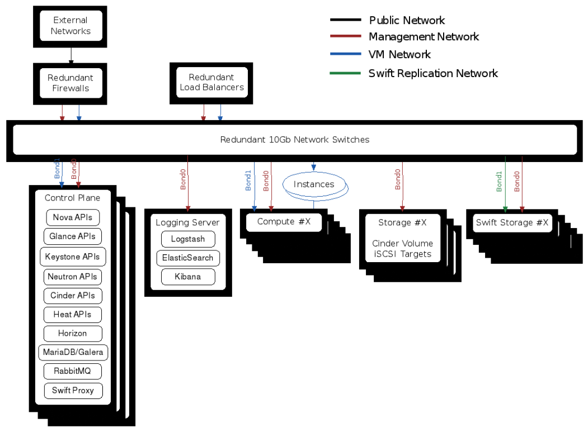

Rackspace Private Cloud Version 10#
Designed to support your enterprise production workloads
Robb Romans <robb.romans@rackspace.com>
Senior Information Developer, Rackspace US, Inc.
Rackspace Private Cloud Documentation Team
Introduction#
Many companies want to take advantage of public cloud features, but aren’t willing to compromise on the performance, security and control that they require for their business applications and data. Public clouds have the potential to introduce performance issues caused by “noisy neighbors,” security concerns associated with placing sensitive data in a shared infrastructure environment, and a lack of control driven by the inability to customize and fine-tune cloud resources to meet the needs of a given application. In addition, IT departments want to avoid vendor “lock-in,” where they become dependent on a vendor and create a cloud that makes future migrations costly and difficult. They need to ensure that their cloud can seamlessly grow with their business and provide high availability for their mission-critical applications.
Rackspace Private Cloud (RPC) is designed to meet these needs. Powered by OpenStack®, it delivers the agility and efficiency of a public cloud combined with the improved security, control, and performance of a dedicated environment. Whether deployed in your data center or ours, RPC is managed by our OpenStack experts and is backed by Fanatical Support®. RPC uses open source Linux Containers (LXC) deployed with the Ansible IT automation system to create a powerful, fully featured, and logically segmented private cloud. It delivers high availability using a four-server control plane with a clustered database and messaging service. RPC is also backed by our industry-leading 99.99% OpenStack API uptime guarantee and it is designed to scale to hundreds of nodes when deployed using our reference architecture.
The purpose of this document is to provide an in-depth look at how the Rackspace Private Cloud solution delivers a scalable and highly available environment that provides high performance, robust security, and complete control on an open source platform.
Performance#
Rackspace Private Cloud provides a scalable and highly available private cloud environment that helps ensure consistent performance for your workloads, without having to worry about interruptions caused by noisy neighbors in the public cloud. Whether in your data center or ours, hardware dedicated just for you ensures that your critical jobs have undisturbed access to the full power of your computing investment. You have full control over how resources are allocated and are backed by our industry- leading 99.99% OpenStack® API uptime guarantee.
Our team of OpenStack experts can architect a private cloud solution that best utilizes your infrastructure investment to match the unique computing needs of your business. For example, workloads can be placed on hardware within the same physical rack, with lightning fast intra-server access through top of rack network switches. If your workloads primarily depend on I/O speed, you can specify that Solid State Disks (SSDs) be used for local storage. Or, if your workloads are driven primarily by a need for computing speed, a greater percentage of your IT spend can be allocated to the latest generation of processors with additional cache.
Our reference architecture creates a cloud that anticipates failure in the infrastructure layer and increases operational granularity in determining where services live. OpenStack services are installed into individual Linux containers, which improve operational efficiency and provide isolation of each service. Users may then scale independently each OpenStack service and seamlessly upgrade from one release to the next. Containers are lightweight and resource friendly and take less overhead than virtual machines, while still providing effective process isolation. In addition, by separating the supporting services, we set up industry-standard high availability patterns, which help improve the stability and performance of your environment.
We designed RPC to be scalable, so that when your capacity needs increase, you no longer need to replace existing working hardware with new, expensive larger servers. Instead, you can add compute or network nodes as needed, and they are ready and available within the machine pool. RPC is designed to scale to hundreds of physical nodes, so you can start small and grow without worry.
To provide a scalable back-end data store, RPC uses a combination of MariaDB plus Galera. MariaDB is an easy to configure, free, open source database that is compatible with MySQL, and Galera is the clustering solution for MariaDB. Galera enables multiple MariaDB nodes to manage synchronous reads and writes. Galera clusters are easily scalable and have no maximum size or node limit. Restrictions on the number of nodes are based only on the capabilities of the load balancer, the amount of bandwidth available, and space in the physical cabinet. Additionally, with RPC you can improve performance by installing relevant servers in the same physical rack, to take advantage of fast local switching without bottlenecks.
RPC also helps you to optimize workload performance by isolating workloads to a particular class of hardware. Cloud administrators can create OpenStack host aggregates that are exposed to users as availability zones. Host aggregates group compute nodes with specific definable characteristics, for example nodes with SSDs or faster processors, or older nodes with legacy hardware. Users can then bring up an instance on a node in the most efficient or cost effective availability zone. For example, compute intensive workloads can be tasked to a subset of high performance servers, or workloads can be restricted to servers in a certain physical location. Or, separate zones can house critical computing workloads and non-critical development and testing workloads to increase availability and efficiency.
To help you start quickly adding business value, RPC provides a suite of free single-click solution templates for some of today’s most widely used open source applications. These hardened, production-quality solution templates can significantly decrease the time it takes and the complexity involved in deploying applications into your cloud. Using the Rackspace Private Cloud solutions tab in Horizon, you can easily launch a production-ready application stack on Rackspace Private Cloud in minutes, not months. RPC solution templates deliver multi-tier, scalable applications with redundancy, caching, and high availability. The following solution templates are currently available from RPC: Magento, Drupal, Galera, MongoDB, ELK stack, and Hortonworks HDP.
Security and control#
Rackspace Private Cloud gives you the convenience and flexibility of a cloud architecture, while giving you the control you need to secure and isolate your critical data. Security and compliance are vital concerns for every organization. Challenges include legislative requirements and internal procedures spanning the physical, logical, and virtual layers. Rackspace experts can help you tailor your on site or hosted private cloud to meet stringent security and compliance requirements.
Hosting your private cloud in a Rackspace data center offers many security advantages. Rackspace data centers are operational 24x7x365 and are staffed by expert security, engineering, and operations personnel. We employ perimeter defense measures, such as walls, fencing, gates, and anti-vehicle controls. The delivery and loading bays at all Rackspace data centers are separate areas secured by defined procedures and security controls. Rackspace also enforces strict employee and visitor access controls.
With RPC, you control where your data resides and how it is accessed. Security is designed into our architecture, with components that provide enhanced protection such as physical firewalls, access controls, and audit logs for reporting and compliance. Identities are authenticated using either internal or external authentication protocols such as LDAP, so you can reuse your existing authentication infrastructure. RPC provides role management and pre-configured role assignments. Roles provide fine-grained authorization over specific actions and are assigned to identified users. You can define custom roles to meet specific compliance or operational needs.
Whether at Rackspace or within your data center, network security is as important as physical security. The OpenStack Networking component (neutron) is a software-defined network (SDN) that provides flexibility for virtual network management. Security over these networks can be enforced in a variety of ways. Rackspace architects and support team experts will work with you to identify and develop an appropriate security solution to meet your current and future requirements.
In our history of managing OpenStack private clouds, Rackspace has found that splitting the control and data network traffic also separates concerns in outage or trouble situations, reducing complexity from your software. It also eases the upgrade path for the control plane for future RPC releases, and generally provides better redundancy.
To provide networking isolation and control, RPC uses OpenStack Networking (neutron) overlay networks and namespaces along with Linux containers. A Linux Bridge plug-in is used to fulfill a simple, robust networking stack, which meets common private cloud networking needs. You can create bridges, namespaces, virtual Ethernet pairs, tunnel interfaces, and tagged sub-interfaces, which are fully encapsulated in containers. This isolation and encapsulation helps you minimize the network attack surface and reduce risk.
Rackspace participates in and facilitates compliance with industry-standard audit reports, certifications, and documentation. RPC uses the ELK stack (Elasticsearch, Logstash, and Kibana) for data analytics, logging, and data visualization. Elasticsearch is a powerful, distributed search and analytics engine. Logstash parses logs into standard JSON format for readability and ease of processing. Kibana’s simple and highly configurable interactive dashboard gives you near real-time insight to identify possible problems, spot trends, and maximize business value.
Open source#
Rackspace Private Cloud Software is powered by OpenStack, the open and actively developed suite of cloud management services. RPC software version 10 is derived from the “trunk” of OpenStack Juno, so you won’t be locked in to proprietary modifications or incompatible APIs. As one of the co-founders of OpenStack, Rackspace contributes significantly to its ongoing development and employs a team of OpenStack experts to provide you with Fanatical Support. With flexibility in the consumption model, compatibility with other open clouds, and the strong, rapidly growing community of fellow OpenStack adopters, RPC gives you an open and transparent solution.
OpenStack is a thriving community developing the leading and widely adopted open source cloud platform, with support from over 450 global companies and tens of thousands of users and contributors. With an open design, open development, and an open community, all code and processes are documented and transparent.
The following are the key benefits of using an open cloud solution:
- Thousands of community developers
- No vendor lock-in
- API compatibility
- Flexibility
- Rapid development, fixes, and innovation
RPC leverages Ansible, Linux Containers (LXC), and other open source technologies to deploy a fully featured OpenStack Juno installation with the following supported services:

RPC provides the following services to support OpenStack:
- Galera with MariaDB
- RabbitMQ™
- Memcached
- Rsyslog
- Logstash
- Elasticsearch with Kibana
The following are some of the improvements in OpenStack Juno that are included in RPC version 10:
- Support for Apache Hadoop 2.4.1 with Apache Spark for managing big data at high speed.
- Network Functional Virtualization (NFV) allows you to essentially replace some hardware network appliances with high performance software.
- Storage policy updates to the swift service enable more granular control of storage cost and performance.
- New nova service features allow easier image rescue and admin image control
- Database service updates with trove allow you to select several different data stores (MySQL, Redis, MongoDB) when creating database instances.
- Across OpenStack, the Juno release simplifies the build, operate, scale, and upgrade steps.
Rackspace Private Cloud provides the agility and efficiency of a public cloud combined with the performance, security and control of a dedicated environment. RPC is a complete managed private cloud solution that is designed to support enterprise production workloads. It gives you all the power of the cloud without the pain of running it, so you can focus on your core business. For more information about how Rackspace can help manage and support your private cloud, please visit http://www.rackspace.com/cloud/private/openstack.